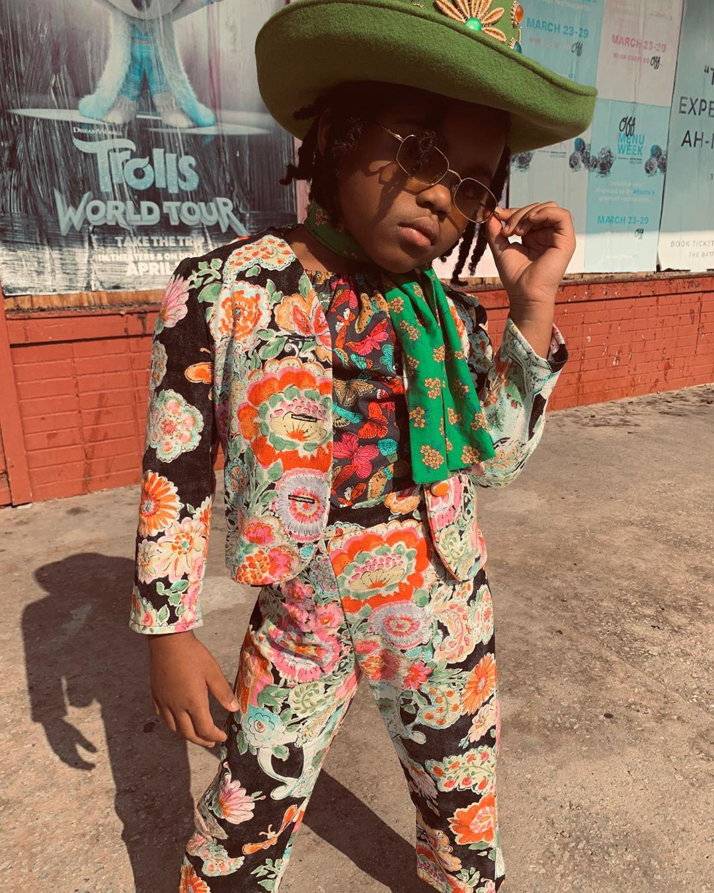

The Atlanta Mom Turning Her Instagram Into a Fashion Playground for Kids
With back-to-school season in full swing, Atlanta-based designer and mother-of-three Alissa Bertrand has her hands full. Rattling off her weekday schedule over the phone, she says her days are spent doing “anything and everything” for her girls, who are being homeschooled this year. These days, she doesn’t get around to her sewing machine until the kids are settling into bed. It’s then that Bertrand gets to channel her creativity into the impressive array of upcycled children’s creations that she showcases on her Instagram account, @jabellafleur. If you’re not familiar with Bertrand’s work, picture a series of lush, vintage-tinged images, featuring pattern-rich Gucciesque frocks and separates as modeled by a trio of pint-size cherubs sporting fluffed ’fros and puffed ponytails.
The designer’s daughters—twin fifth-graders Jada and Jayla and second-grader Ella—are the models and muses behind Jabella Fleur, the latest iteration of her 20-year evolution as a home sewer. When Bertrand herself was a young girl, she remembers receiving “these little cross-stitch kits” from an aunt. “Everybody else would get cool gift cards to the movie theater or something like that, and I was like, ‘Wow, this really sucks,’” she recalls, laughing. In junior high, Bertrand chose sewing as an elective in order to avoid a cooking class and found that she enjoyed the freedom of being able to create anything she could dream up. Even so, she struggled to find patterns that fit her properly, which stymied her attempts to sew for herself.

About five years ago, her passion for the craft deepened as she began to tinker with new additions to her daughters’ wardrobes. In January 2019, she created an Instagram account to show off her ingenuity. For about a year and a half, Bertrand was posting in relative anonymity, but in the summer of 2020, amid a wave of renewed interest in Black creatives and their work, Bertrand saw her follower count balloon to more than 20,000. She admits she’s still grappling with the implications of this increased visibility. “Okay, are you just noticing me in a sense because you see Black content, and now all of a sudden you want to support?” she asks. “Or is it because you truly enjoy what you’re seeing?”
In any case, Bertrand is used to rolling with the unexpected and making it work. “I never planned on doing childrenswear,” she explains. “It just so happened that I have three younger muses, so I decided to sew for them because I could literally fit it on them and do all that. I wanted to do womenswear originally.” When purchasing yards upon yards of fabric turned out to be less than economical, she turned to her local thrift stores and began using vintage bedsheets, tablecloths, and curtains as raw material for her designs. Bertrand had planned to attend the Art Institute of Atlanta this year, but when the pandemic and her responsibilities at home made that impossible, she focused instead on planning her upcoming line for kids. She’s currently working with a fabric designer so that she can produce her signature vintage-infused, eclectic creations for a broader clientele.
Though Bertrand and her family have been homebound since March, her list of inspirations is long and far-flung. She speaks happily of the time they spent saving up to buy a home by living in Dominica, where her husband’s family is from, and is already dreaming of their next adventure: “Wouldn’t it be so fun to just take six months or so out of the year and just travel through Africa?” Movies like Eve’s Bayou and Daughters of the Dust are among the encyclopedia of visual references she channels in the clothing she creates.
“I just try to create what I would have wanted to see growing up,” Bertrand says of the dreamy imagery she produces with her iPhone XR in and around her Atlanta home. “I never saw images of girls in fashion. That sense of confidence, and power, I never saw that. I probably would be a different person by being exposed to something like that.”
For that reason, it’s powerful that she’s now using her creativity to impart that very sense of self to her three girls. She encourages them to express themselves as they see fit, from their hairstyles to the accessories they choose to accompany their custom wardrobes to the way they pose for photos. The girls have perfected a certain gaze that exudes poise and cool—a signature pose that has inspired a few commenters to ask why the girls don’t smile more. Bertrand isn’t having any of it. “Society has told me how to put my hair, how I should look, how I should dress, my education,” she says. “I let the girls decide how they want to be in the picture, and that’s what they do.”
Moments like these often become teachable ones for the girls. “You have to explain so much stuff that you wouldn’t normally, depending on your race,” Bertrand says. Now that she’s creating their homeschooling curriculum, Black history and Black futures are subjects that come up even more often. Still, Bertrand continues to make the most of her after-school hours, whipping up one-of-a-kind kids’ clothing that is cooler than just about anything off the rack. And for those of us who wouldn’t mind wearing some of her creations in adult sizes, she says she still plans to do a women’s line—it’s just another thing on her lengthy to-do list.